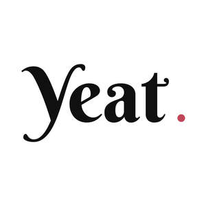

Trade Mark Journal No.2025/018 2 May 2025
UK00004162397 19 February 2025 (9,42,43)

- Class 9
- Mobile application software platforms for booking dining reservations.
- Class 42
- Hosting of mobile application software platforms for booking dining reservations.
- Class 43
- Hotel reservations; Reservation of restaurants; Restaurant reservation services; Making reservations and bookings for restaurants and meals; Booking of restaurant seats; Reservation and booking services for restaurants and meals; Accommodation reservations; Hotel restaurant services; Hotel reservation services; Providing room reservation and hotel reservation services; Making hotel reservations for others; Reservation of hotel accommodation; Agency services for reservation of restaurants; Restaurant services; Reservation services for booking meals; Carvery restaurant services; Travel agency services for making hotel reservations; Bar and restaurant services; Restaurant and bar services; Hotel accommodation reservation services; Reservation of accommodation in hotels; Reservation of tourist accommodation; Reservation of rooms for travellers; Accommodation reservations (Temporary -); Temporary accommodation reservations; Reservations (Temporary accommodation -); Room reservation services; Restaurants; Spanish restaurant services; Japanese restaurant services; Mobile restaurant services; Reservation services for the booking of accommodation; Restaurant information services; Restaurant services provided by hotels; Booking of hotel rooms for travellers; Reservation services for accommodation; Accommodation reservation services; Hotel room booking services; Booking of hotel accommodation; Providing food and drink for guests in restaurants; Tourist restaurants; Providing online information relating to hotel reservations; Bistro services; Resort hotel services; Travel agency services for booking restaurants; Reservation of temporary accommodation; Providing restaurant services; Food and drink catering for banquets; Agency services for booking hotel accommodation; Booking agency services for hotel accommodation; Travel agency services for reserving hotel accommodation; Hotel reservation services provided via the Internet; Temporary accommodation reservation services; Accommodation reservation services [time share]; Booking services for hotels.
yeatapp ltd